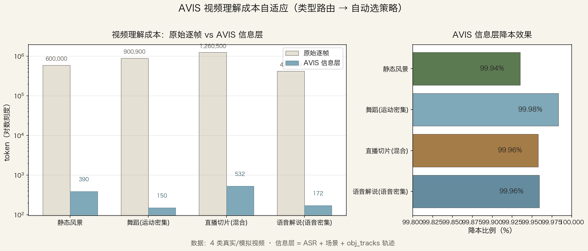

让 LLM 读视频的信息层（几千 token），而不是逐帧像素（百万 token）。先低成本判断视频类型，自动选择最便宜且够用的理解策略。核心指标是 token 压缩率——模型无关、随时段价格波动不变。
* 价格随模型/时段/缓存变化：按 deepseek-v4-flash 2026-08-17 调价空闲价，单视频约 0.008 元（示例价）。token 压缩率为模型无关的结构性指标。
主流多模态视频理解是逐帧采样：抽 N 帧，每帧编码成约 1000 token 喂给模型。
1 分钟 1080p × 30fps = 1800 帧 × 1000 token = 180 万 token
| 方案（1 小时视频） | token | 相对成本 |
|---|---|---|
| 原始逐帧 24fps | ~8,640 万 | 100% |
| 纯 ASR（语音密集） | ~2 万 | 0.02% |
| AVIS 信息层 | ~2.5 万 | 0.03% |
各家模型都在重复同一件事：把同一段视频的像素解码成张量、各跑一遍编码器。没有人做「一次编码、多方复用」的中间层 —— 这就是我们要补的位置。
关键洞察：不是所有视频都需要「看见每一帧」。播客听语音、运动看轨迹、产品看对象。
架构从「一次信息层 → LLM」演进为「语义层缓存 + 带着问题找答案」：
┌─────────────── 语义层（一次编码，按视频缓存）───────────────┐
│ MV码流 · tiny/base ASR · 场景 · 轨迹 · YOLO · [CLIP视觉索引] │
└──────────────────────────────────────────────────────────────┘
↑ 同视频二次提问：缓存命中，零重新提取（已验证）
用户问题 ─→ ① 定位器（读语义层全文，语义定位答案窗口+缺口）
─→ ② 聚焦（只在窗口花成本：局部 base 重转写 / L2 抽帧）
─→ ③ LLM 回答 + 质量自评（不足 → 再聚焦，3 轮封顶）
─→ ④ suggest_layer？→ 用户决定是否建完整层（base+CLIP）
├─ 建 → 后续任何问题秒答（缓存）
└─ 不建 → 结束，只花最小成本（一次性用户不为多轮买单）
2026-08 用自研下载器取 10 个真实 B站视频（8 类别 × 1~28 分钟 × 360p~1080p 多画质），完整跑 下载 → encode → classify → prompt → LLM。链路 10/10 全部成功。
| # | 视频 | 类型 | 窗口 | 信息层 tok | 原始逐帧 tok | token压缩 |
|---|---|---|---|---|---|---|
| 1 | BJ黑珍舞蹈视频.mp4 | motion_dense | 150s | 926 | 4,500,000 | 99.98% |
| 2 | 【2026】个人好物推荐分享ED | speech_dense | 180s | 1,166 | 5,400,000 | 99.98% |
| 3 | 【恐怖动画】五日安魂 第五集.m | motion_dense | 78s | 643 | 2,340,000 | 99.97% |
| 4 | 做个超下饭麻辣拌！….mp4 | motion_dense | 180s | 899 | 5,400,000 | 99.98% |
| 5 | 已瘦16斤女，一天1.5顿饭生存 | speech_dense | 180s | 1,305 | 5,400,000 | 99.98% |
| 6 | 带至爱亲朋来溪边搞一个烧烤….m | speech_dense | 180s | 1,091 | 5,400,000 | 99.98% |
| 7 | 挑战蒙眼摸车….mp4 | speech_dense | 180s | 1,202 | 5,400,000 | 99.98% |
| 8 | 普通人玩蛋冲….mp4 | speech_dense | 119s | 649 | 3,570,000 | 99.98% |
| 9 | 第100期 ｜ 看片….mp4 | speech_dense | 180s | 1,193 | 5,400,000 | 99.98% |
| 10 | 荣耀robotphone真机上手 | motion_dense | 62s | 870 | 1,860,000 | 99.95% |
同一视频 × 4 种信息层 × 8 个事实问题 → LLM 作答（分数 + 消耗 token）：

21 分钟电影解说视频端到端：下载 + 分析 + 理解 220 秒，LLM 成本 0.008 元（含 3 个问答），token 压缩 99.99%。
📐 核算口径：① LLM 成本按 deepseek-chat（实际路由 v4-flash）2026-08-17 调价后空闲时段价格：输入 1.5 元/百万 token、输出 4.5 元/百万 token；② 「token 压缩」= 信息层实际 token ÷ 原始逐帧估算 token（30fps × 1000 token/帧），是压缩率对比，非两家账单对比；③ 本地信号（MV/MOG2/whisper/YOLO）不计费，未计入电费与算力时间。
同一视频被反复理解（多次问答、多个模型、多个下游）时，AVIS 叠加上下文缓存进一步省钱：
| 环节 | 首次 | 重复（第 2 次起） |
|---|---|---|
| 本地信号提取（MV/ASR/YOLO） | 免费（算力时间） | 0（文件缓存，不重跑） |
| 信息层 prompt（实测 1237 tok） | 全价 | 93% 命中缓存 @0.05元/M |
| LLM 成本（21min 视频示例） | ~0.006 元 | ~0.0003 元（约 1/20） |
机制：DeepSeek 上下文缓存按前缀命中 —— 信息层作为稳定前缀，换问题、换模型都命中；实测第 2 次起 1152/1237 tok 走缓存价（0.05 vs 1.5 元/M，便宜 30 倍）。
prompt 曾把逐秒标签行数当边界数（「180 个边界」）。改为从标签重算真实边界 + 分布后，游戏视频给出精确边界时间点（1/33/97/99/110/114s）。
whisper tiny 对部分视频 0 段 → 自动 base 重试。复测确认「纯 BGM 无解说」视频路由 motion_dense 是正确的，而非分类失误。
集成本地 YOLOv8n（6.2MB）对象标签：全帧检测 + IoU 匹配，误检清零。舞蹈「5 person + 数拍口令」，评测「2 手机 + 1 人」。
剩菜盲盒实测（8.5min 视频，问「博主买了什么剩菜盲盒」）——零人工干预：
| 轮次 | 信号 | LLM 自评 | 自动动作 |
|---|---|---|---|
| 1 | tiny ASR | 3/10 · 缺口 asr | ⬆️ 自动升 base 重转写 |
| 2 | base ASR | 4/10 · 缺口 visual | ⬆️ 自动 L2 关键段抽帧（价格词滑窗选段） |
| 3 | base + L2 | 达标 | ✅ 5.5欧 / 两个硬法棍 / 牛角包 / 甜甜糕点分类装袋 |
成本 0.0181 元（3 轮封顶）。与 classify 分工：classify 是事前类型路由（选信号），质量门控是事后质量路由（判结果：LLM 自评充分度）——前者看信号特征，后者看 LLM 自己觉得够不够，两者互补。
| 案例 | 视频 | 问题 | 自动流程 | 耗时 | 成本 | 结果 |
|---|---|---|---|---|---|---|
| 剩菜盲盒 | 8.5min | 买了什么盲盒 | tiny→base→L2关键段 | 204s | 0.0181 元 | ✅ 5.5欧/硬法棍/牛角包/甜甜糕点 |
| 发现龙穴 | 11.4min | 标题什么意思 | tiny→L2（标题进prompt） | 172s | 0.0143 元 | ✅ 标题党实锤（横幅证据） |
| 火锅·全量版 | 21.5min | 点了哪些荤菜 | tiny→base→base(重复bug) | 799s | 0.0167 元 | ⚠️ 需人工补跑 |
| 火锅·问题驱动 | 21.5min | 点了哪些荤菜 | 定位→base局部→L2菜单特写 | 314s | 0.0125 元 | ✅ 牛肉/鸡肉/毛肚/老鹅蹄花，零人工 |
四维评分（问题驱动版）：速度 8/10（314s）· 准确 9/10 · token 10/10（0.0125 元）· 人工 10/10 = 37/40。全部案例 token 压缩 99.99%。
L0 内容级（摘要/问答/分类/剪辑）→ 信息层，0.008 元/视频 ← 80% 需求在这 L1 视觉级（对象/事件细节） → L0 + 按需抽 3-5 帧 + VLM L2 证据级（逐帧审查） → 仅对 L0/L1 命中的可疑片段展开
常规需求的 80% 永远走 L0；只有真正需要画面细节才升级 —— 整体成本仍比「全部逐帧」低 2~3 个数量级。
· MOG2 轨迹在 360p 低清/镜头跟随下碎片化（person 召回 5/12），1080p 源效果显著更好
· YOLO 仅 COCO 80 类，食物/产品型号等专业对象仍 unknown
· tiny ASR 错别字（「小米83 Pro」）影响精确型号提取
· 表情/纹理/OCR 等像素级细节需要多模态兜底
git clone git@github.com:ilps2/live-clip.git cd live-clip python3 understand_video.py "B站链接或BV号" # → 下载 → AVIS 分析 → 摘要 + 3 个问答，0.008 元，220 秒
github.com/ilps2/live-clip —— 代码、数据、消融实验、成本图全部开源。